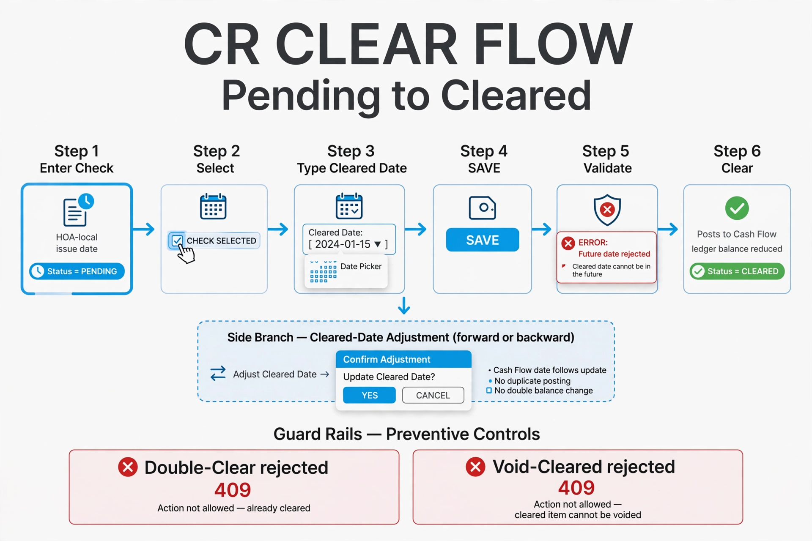
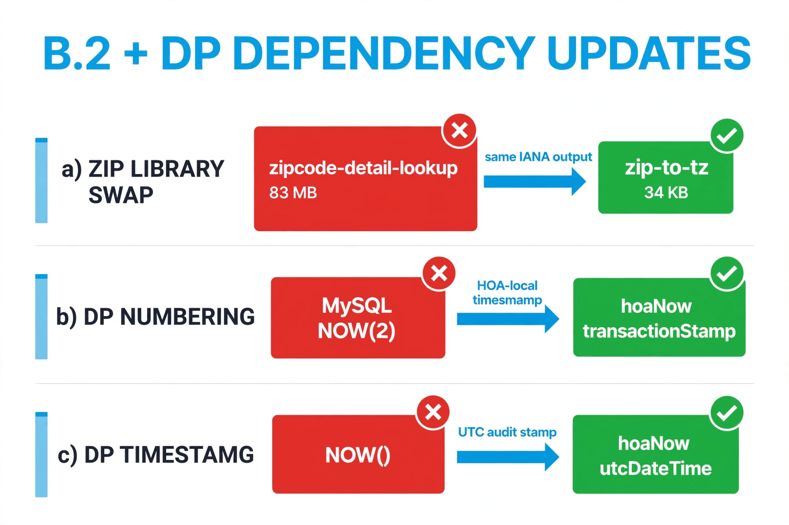
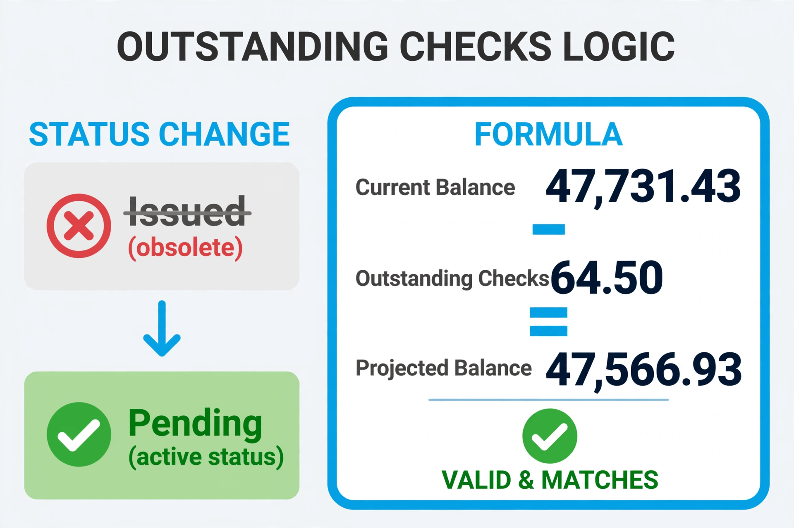
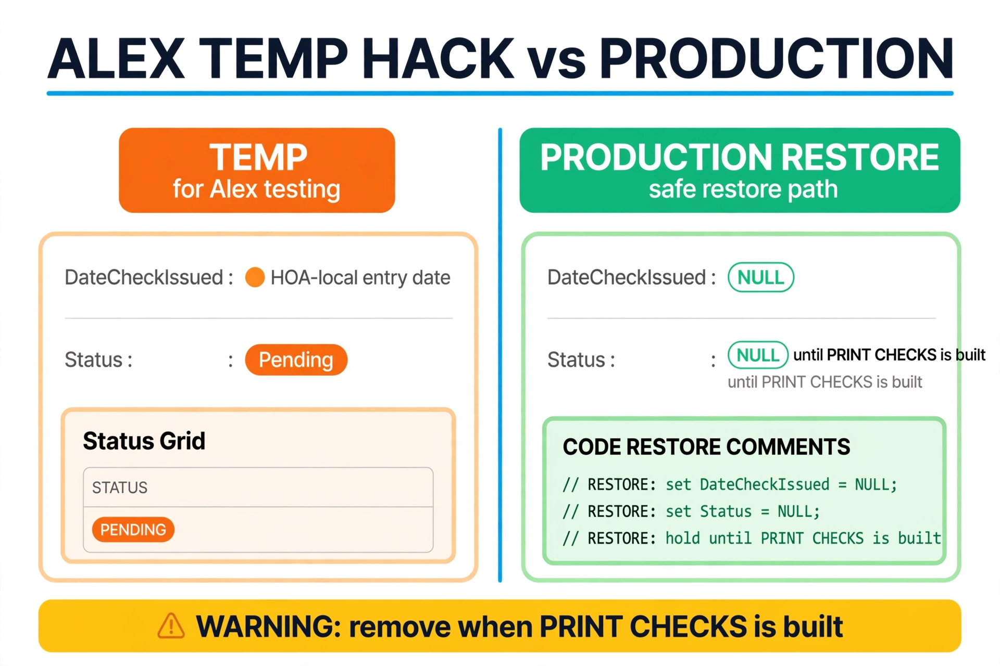

1What changed
| Front | Change | Status |
|---|---|---|
| B.2 ZIP | zipcode-detail-lookup → zip-to-tz; Cash Flow uses getHoaTimeZone | ✅ verified |
| DP numbering | NOW(2) → hoaNow.transactionStamp | ✅ verified |
| DP created | NOW() → UTC createdAt | ✅ verified |
| CR clear | Pending→Cleared + date adjustment, no duplicate CashFlow | ✅ verified |
| Outstanding | Issued → Pending | ✅ verified |
| Alex hack | Temp printed-simulation with RESTORE comments | ⚠ watch |


2Outstanding math ✅
Current $147,731.43 − Outstanding $164.50 = Projected $147,566.93.

3Alex hack vs production ⚠ watch

4Next steps
Rick finishes accounting cleanup → explicit “server.js clear” → rebase + push local docs. No live test run under hold-off; UTC clear lines unchanged in diff.